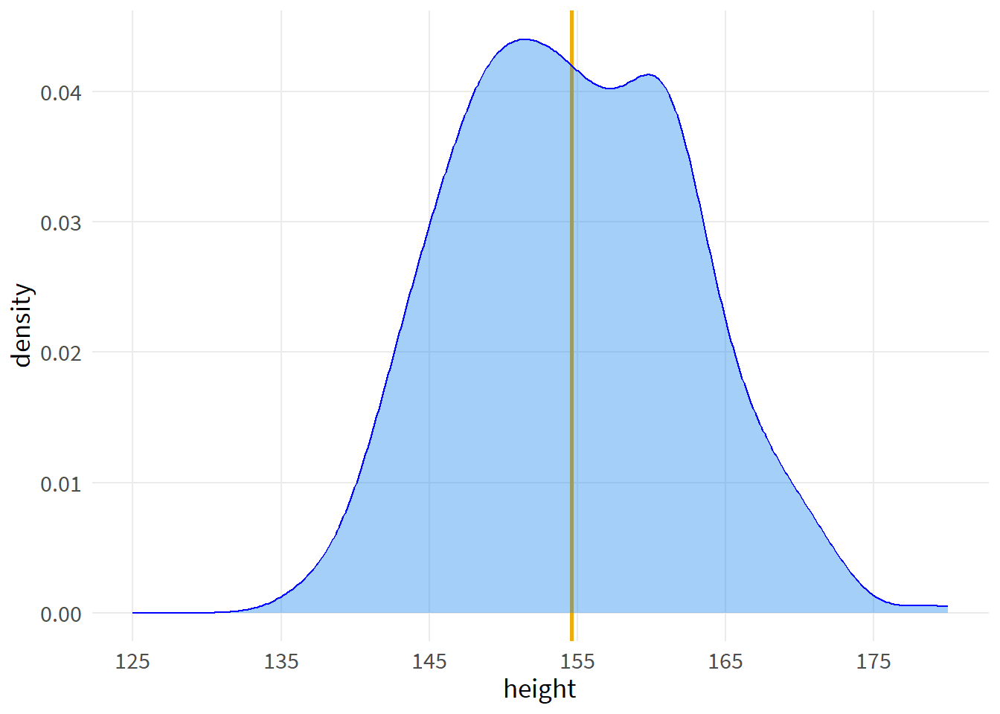
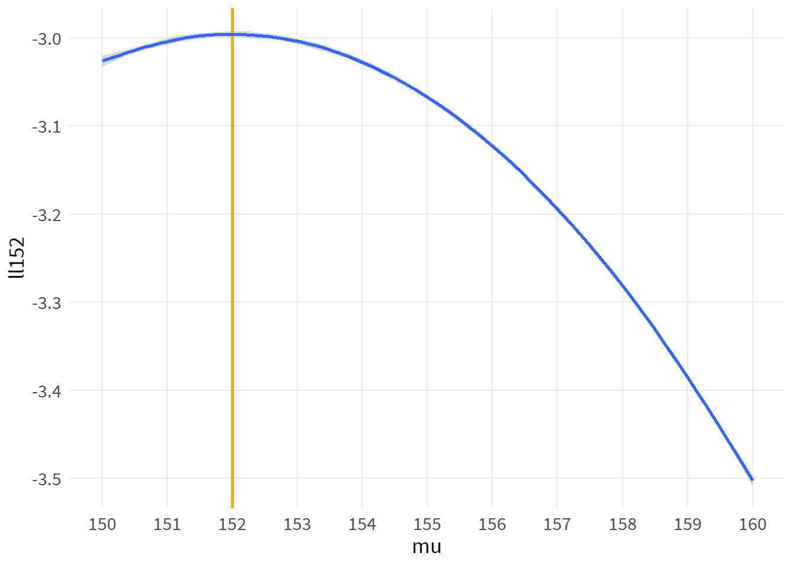
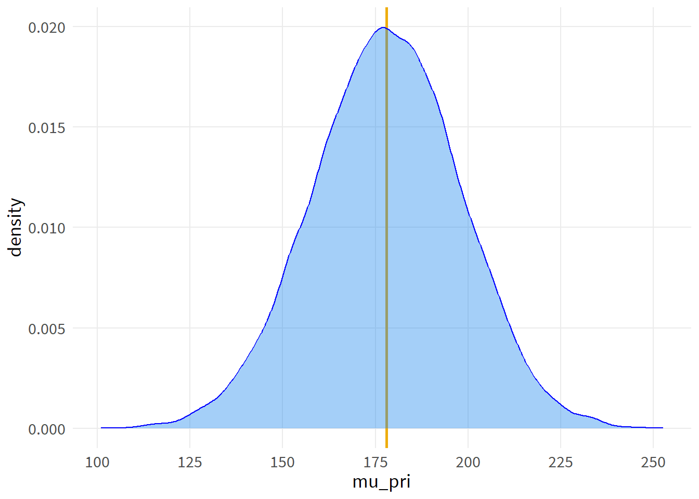
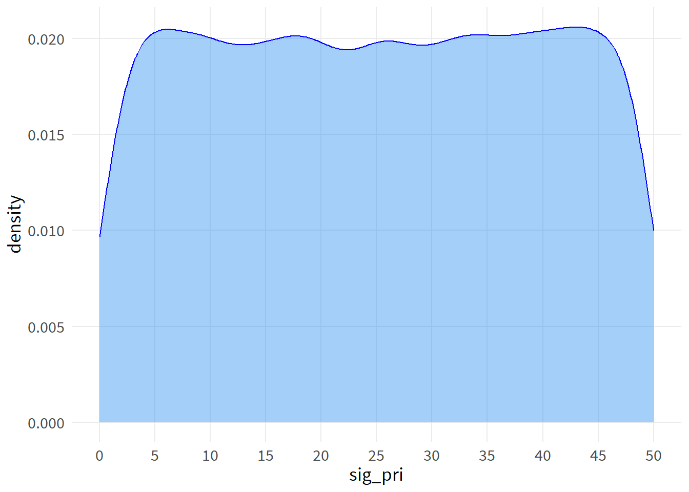

data(Howell1)
d <- Howell1 %>%
filter(age>17) %>%
select(1:2)
rm(Howell1)
head(d) %>%
flextable()height | weight |
|---|---|
152 | 47.8 |
140 | 36.5 |
137 | 31.9 |
157 | 53.0 |
145 | 41.3 |
164 | 63.0 |
Week 2 lecture notes
data(Howell1)
d <- Howell1 %>%
filter(age>17) %>%
select(1:2)
rm(Howell1)
head(d) %>%
flextable()height | weight |
|---|---|
152 | 47.8 |
140 | 36.5 |
137 | 31.9 |
157 | 53.0 |
145 | 41.3 |
164 | 63.0 |
psych::describe(d)| vars | n | mean | sd | median | trimmed | mad | min | max | range | skew | kurtosis | se |
| 1 | 352 | 155 | 7.74 | 154 | 154 | 8.47 | 137 | 179 | 42.5 | 0.15 | -0.508 | 0.413 |
| 2 | 352 | 45 | 6.46 | 44.8 | 44.9 | 6.7 | 31.1 | 63 | 31.9 | 0.131 | -0.53 | 0.344 |
The parameters we are interested in right now are a mean height of 154.6 with standard deviation 7.7
ggplot(d, aes(height)) +
geom_vline(xintercept=mean(d$height),
color="darkgoldenrod2",
linewidth=1) +
geom_density(color="blue",
fill="dodgerblue2",
alpha=.4) +
scale_x_continuous(limits=c(125,180),
breaks=seq(125,175,10))
Let’s create the model space. Note that we have two parameters to estimate (mean and standard deviation), and those parameter values can interact with one another. So our model space comprises combinations of the two parameters.
options(digits=4, scipen=8)
mu.list <- seq( from=150, to=160 , length.out=100 )
mu.list[c(1:5, 25:30, 55:60)] [1] 150.0 150.1 150.2 150.3 150.4 152.4 152.5 152.6 152.7 152.8 152.9 155.5
[13] 155.6 155.7 155.8 155.9 156.0Note that we take a range of possible parameters that are sensible based on what we already observed about our data. The range was range(d$height) with a mean of mean(d$height). So we take candidate values around what we think the mean is.
options(digits=3, scipen=8)
sigma.list <- seq( from=7 , to=9 , length.out=100 )
sigma.list[c(1:5, 25:30, 55:60)] [1] 7.00 7.02 7.04 7.06 7.08 7.48 7.51 7.53 7.55 7.57 7.59 8.09 8.11 8.13 8.15
[16] 8.17 8.19Same idea with the standard deviation of the data - we take candidate values ranging around what we already know is the actual value.
post <- expand.grid( mu=mu.list , sigma=sigma.list )
post %>%
head() %>%
flextable() %>%
colformat_double(digits=1)mu | sigma |
|---|---|
150.0 | 7.0 |
150.1 | 7.0 |
150.2 | 7.0 |
150.3 | 7.0 |
150.4 | 7.0 |
150.5 | 7.0 |
We now have a model space of 10,000 combinations of height and standard deviation of heights
For illustration purposes, first we will try out our model space on a single datum
ht <- 152
post <- post %>%
mutate(ll152 = dnorm(ht, mu, sigma, log=T))
psych::describe(post)| vars | n | mean | sd | median | trimmed | mad | min | max | range | skew | kurtosis | se |
| 1 | 1e+04 | 155 | 2.92 | 155 | 155 | 3.74 | 150 | 160 | 10 | -6.94e-16 | -1.2 | 0.0292 |
| 2 | 1e+04 | 8 | 0.583 | 8 | 8 | 0.749 | 7 | 9 | 2 | 3.53e-16 | -1.2 | 0.00583 |
| 3 | 1e+04 | -3.13 | 0.162 | -3.1 | -3.12 | 0.16 | -3.52 | -2.86 | 0.653 | -0.565 | -0.598 | 0.00162 |
ggplot(post, aes(mu, ll152)) +
geom_vline(xintercept=152, color="darkgoldenrod2", linewidth=1) +
stat_smooth() +
scale_x_continuous(breaks=150:160)`geom_smooth()` using method = 'gam' and formula = 'y ~ s(x, bs = "cs")'
The log likelihood is highest (maximized at the height data point of 152. We already know this by construction.
We can incorporate information about the likelihoods of a height of 152 across the entire model space by taking a sum.
tll <- sum(post$ll152)
tll[1] -31347For all combinations of candidate values of mu and sigma that we establish in the object post, the sum of the log likelihoods for the datum of height=152 is sum(post$ll152).
Again for illustration purposes, now let’s try out a single combination of mu and sigma, across all of our observations of height.
mu_ex <- 150
sig_ex <- 7
d <- d %>%
mutate(ll150_7=dnorm(height,
mu_ex, # 150
sig_ex, # 7
log=T))
d %>%
head() %>%
flextable()height | weight | ll150_7 |
|---|---|---|
152 | 47.8 | -2.90 |
140 | 36.5 | -3.95 |
137 | 31.9 | -4.72 |
157 | 53.0 | -3.34 |
145 | 41.3 | -3.08 |
164 | 63.0 | -4.82 |
Similar to the summary value we did above, we can incorporate information about the likelihood of a particular combination of mu (150) and sigma (7), across all data points.
sum(d$ll150_7)[1] -1299# textbook code to generate likelihood
#post$LL <- sapply( 1:nrow(post) , function(i) sum(
# dnorm( d$height , post$mu[i] , post$sigma[i] , log=TRUE ) ) )post <- post %>%
mutate(likelihood = sapply(1:nrow(post), function(i)
dnorm(d$height,
post$mu[i],
post$sigma[i],
log=T) %>%
sum()
)) post %>%
head() %>%
flextable() %>%
colformat_double(j=1:2,
digits=1)mu | sigma | ll152 | likelihood |
|---|---|---|---|
150.0 | 7.0 | -2.91 | -1,299 |
150.1 | 7.0 | -2.90 | -1,296 |
150.2 | 7.0 | -2.90 | -1,293 |
150.3 | 7.0 | -2.89 | -1,289 |
150.4 | 7.0 | -2.89 | -1,286 |
150.5 | 7.0 | -2.89 | -1,283 |
mu_pri <- data.frame(mu_pri=rnorm(1e4, 178, 20))
ggplot(mu_pri, aes(mu_pri)) +
geom_vline(xintercept=mean(mu_pri$mu_pri),
color="darkgoldenrod2",
linewidth=1) +
geom_density(color="blue",
fill="dodgerblue2",
alpha=.4) +
scale_x_continuous(breaks=seq(100,250,25))
sig_pri <- data.frame(sig_pri=runif(1e4, 0, 50))
ggplot(sig_pri, aes(sig_pri)) +
geom_density(color="blue",
fill="dodgerblue2",
alpha=.4) +
scale_x_continuous(breaks=seq(0,50,5))
# textbook code to generate product of likelihood and prior
#post$prod <- post$LL + dnorm( post$mu , 178 , 20 , TRUE ) +
# dunif( post$sigma , 0 , 50 , TRUE )post <- post %>%
mutate(prior=dnorm(mu, 178, 20, T),
sigpri=dunif(sigma, 0,50,T),
product=likelihood+prior+sigpri)# textbook code to convert log likelihoods back to probabilities
# note these are relative posterior probabilities, but no longer strictly probabilities as they do not sum to one
#post$prob <- exp( post$prod - max(post$prod) )post <- post %>%
mutate(prob=exp(product-max(product)))Draw from the probabilities to get a posterior distribution.
# 4.19
set.seed(5432)
sample.rows <- sample( 1:nrow(post) , size=1e4 , replace=TRUE ,
prob=post$prob )
sample.mu <- post$mu[ sample.rows ]
sample.sigma <- post$sigma[ sample.rows ]out <- data.frame(row=sample.rows) %>%
arrange(row) %>%
mutate(serial=1:1e4,
mu=sample.mu,
sigma=sample.sigma) %>%
relocate(serial, .before=row)
out %>%
head() %>%
flextable()serial | row | mu | sigma |
|---|---|---|---|
1 | 42 | 154 | 8.29 |
2 | 44 | 155 | 7.67 |
3 | 46 | 155 | 7.81 |
4 | 52 | 154 | 7.95 |
5 | 144 | 155 | 7.77 |
6 | 145 | 155 | 7.75 |
options(digits=4, scipen=8)
psych::describe(d$height) %>%
flextable()vars | n | mean | sd | median | trimmed | mad | min | max | range | skew | kurtosis | se |
|---|---|---|---|---|---|---|---|---|---|---|---|---|
1 | 352 | 154.6 | 7.742 | 154.3 | 154.5 | 8.473 | 136.5 | 179.1 | 42.54 | 0.15 | -0.5078 | 0.4127 |
psych::describe(out$mu) %>%
flextable()vars | n | mean | sd | median | trimmed | mad | min | max | range | skew | kurtosis | se |
|---|---|---|---|---|---|---|---|---|---|---|---|---|
1 | 10,000 | 154.6 | 0.4128 | 154.6 | 154.6 | 0.4493 | 153.1 | 156.1 | 2.929 | -0.007498 | -0.02207 | 0.004128 |
The posterior distribution recovers the mean from the data. In this case the prior was way off, but there was enough data to overwhelm the prior and not mess up our results.
ggplot(out, aes(mu)) +
geom_vline(xintercept=mean(out$mu),
color="darkgoldenrod2",
linewidth=1) +
geom_density(fill="dodgerblue2",
color="blue",
alpha=.4)